КадрГраница миграционный комплаенс без границКак работает «КадрГраница»
Видео на две минуты: обзор компании, дедлайны, риски и штрафы, документы, уведомления, журнал действий и настройки. Компания, сотрудники и цифры в прототипе придуманы для примера.
Теперь попробуйте сами. В прототипе можно открыть карточку сотрудника, посмотреть сроки и риски в рублях, подготовить уведомление и переключить тему оформления. На компьютере удобнее, чем с телефона.
Открыть прототипКнопка для перехода в прототип появится, когда видео закончится.